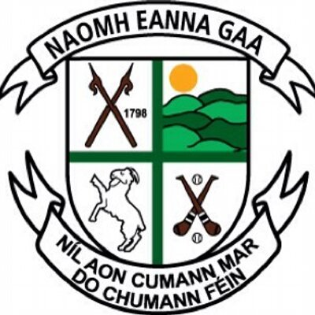

Sport.
Sport is a very popular past time in the town of Gorey. There are many sports facilities and clubs on offer mainly in the areas of soccer and GAA. However, don't be too dissheartened if these aren't your areas of preference as there are load of other smaller clubs and societies such as the martial arts clubs, boxing club and even a drama society. The area of sport is actually quite successfull in the town and something that the population take great pride in. Just this year (2018) the local hurling club Naomh Eanna won their first ever senior club hurling title. It is actually quite surprising that they had never previously won this honour given the large population available however take nothing away from the young team as this is stil a monumentous achievement that was well celebrated by the whole town both young and old.There were many videos shared on Facebook of the teams homecoming. They were greeted by thiusands upon thousands of people who had lined out along the main street as they marched down behind the pipe band. It was a very emotional experience for a lot of people, oe old man was even quoted saying he could "die happy" now that he had lived to see his home club win such a respected trophy. The celebrations continued well into the night and even spilled over to the nect week but that is a story for another day. Away from the GAA there are also other very successful sports clubs among Gorey. For example, Gorey boxing club has produced one of the finest and best known boxers to come from gorey in Niall "Boom Boom" Kennedy. There is also a very well run and seamlessly managed tennis club, taek wan do club and many, many more. In terms of societies you will have to look no further than Gorey! There is a massive range of socities available from the likes of the knitting society (That my own mother is a member of!) to things like the pool and snooker club that is situated right in the heart of the town and also the BMX club located a 5 minute drive away, to be quite honest, there is absolutely no reason to be bored when you're in our great little town.
Drama club.
The drama club in Gorey is also quite popular and I suppose could be considered quite well known. At the top of the town we actually have a very large theatre that can seat 341 people. The theatre itself has been running since the early 1950's and actually hosts the annual Leinster Drama Festival, a festival where amateur drama groups from all over Leinster come along and put on a show. The theatre also holds the "Bene Merenti" talent show which is put on year after year by Gorey Community School, the largest secondary school in the country. I myself have actually taken part in this talent show a few years ago in a group with some of my friends (pictured right) however wether or not we were showing talent or making a show of ourselves is quite debateable. The theatre group also put on their own show each year which is available to the public and I can honestly say that it is usually a huge success gathering magnificent crowds of people both old and young. They also do their best to give back to the community for their support and they put on bingo on a Monday night for anyone who'd like to attend. All in all, the theatre and drama group in Gorey is a great soceiety that provides a great service to members of the community and also entertains thousands each year.
Other Societies.

There are also many societies available wthin the town. For example, there is quite a popular society called the "Gorey phtographic society". They are actually a very well established society where members take photographs as professionally as possiible and share them amongst themselves. They also have a facebook page where people from outside the society can go on and view their work. They actually have some of their work on display throughout the town in such places as the towns library and the market house centre where they try and gain recognition for what they have done. There are many other smaller societies within the town, too many to mention them all. There are thngs on offer uch as a roller derby society, a scout group, the tidy towns society. I believe that it is the likes of these socities that helps to create the unwavering close community bond within the town, it is within these communities that the people of the town meet each other and form bonds. It also gives people a topic of conversation when they meet, creating further friendships and the lovely hymn of conversation that can be heard throuhgout the main street and even spills into the lesser populated areas. Without a doubt, the huge supply of communities is one of the best parts about Gorey and is something that makes it one of the greatest towns in Ireland.